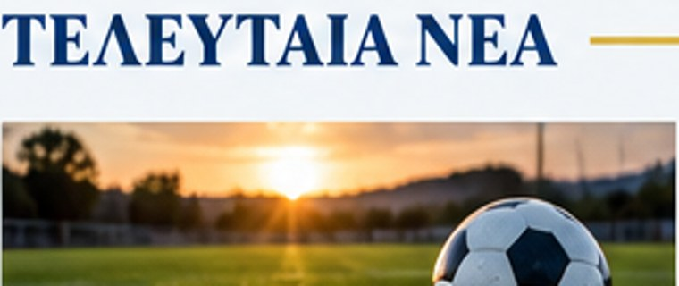
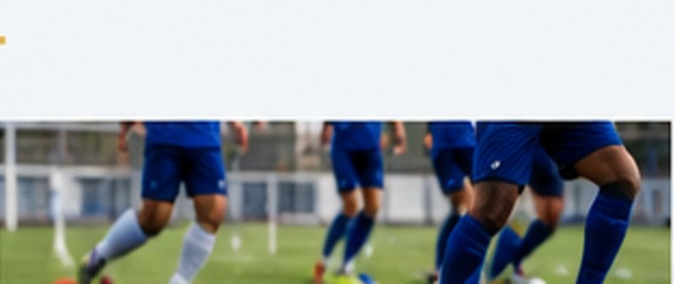
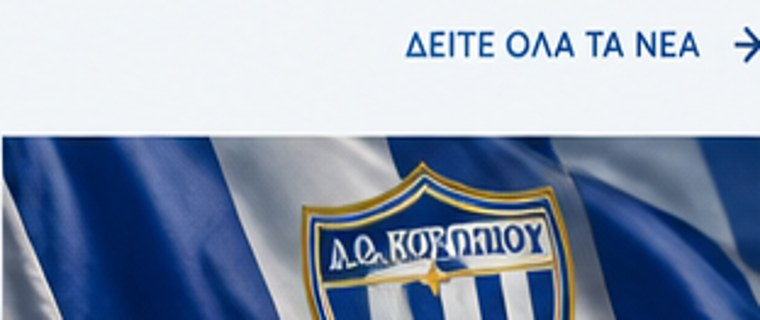

ΑΝΑΚΟΙΝΩΣΕΙΣ
Ενημέρωση για τη νέα αγωνιστική περίοδο
Εδώ θα δημοσιεύονται οι επίσημες ανακοινώσεις του συλλόγου.
ΕΝΔΕΙΚΤΙΚΟ ΠΕΡΙΕΧΟΜΕΝΟΑΠΟ ΤΟ 1903 · ΚΟΡΩΠΙ
Η ΙΣΤΟΡΙΑ ΜΑΣ. Η ΠΕΡΗΦΑΝΙΑ ΜΑΣ. ΤΟ ΜΕΛΛΟΝ ΜΑΣ.
Αναμένεται ενημέρωση
 Α.Ο. ΚΟΡΩΠΙΟΥ– : –?ΑΝΤΙΠΑΛΟΣ
Α.Ο. ΚΟΡΩΠΙΟΥ– : –?ΑΝΤΙΠΑΛΟΣΠροσθέστε τον Α.Ο. Κορωπίου στο κινητό σας
Δοκιμαστική παρουσίαση — όχι επίσημα δεδομένα.

Εδώ θα δημοσιεύονται οι επίσημες ανακοινώσεις του συλλόγου.
ΕΝΔΕΙΚΤΙΚΟ ΠΕΡΙΕΧΟΜΕΝΟ
Ενημέρωση για τις δράσεις και τις προπονήσεις των ακαδημιών.
ΕΝΔΕΙΚΤΙΚΟ ΠΕΡΙΕΧΟΜΕΝΟ
Αποτελέσματα και ανασκοπήσεις μετά την επιβεβαίωσή τους.
ΕΝΔΕΙΚΤΙΚΟ ΠΕΡΙΕΧΟΜΕΝΟ
Στιγμές και νέα από τη ζωή του Α.Ο. Κορωπίου.
ΕΝΔΕΙΚΤΙΚΟ ΠΕΡΙΕΧΟΜΕΝΟΟ ΣΥΛΛΟΓΟΣ
Μια σύγχρονη ψηφιακή παρουσία για τον Α.Ο. Κορωπίου, τους αθλητές και την τοπική κοινωνία.
ΓΝΩΡΙΣΤΕ ΜΑΣ →